| 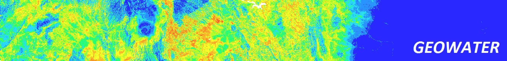 |
| Home | Case Study | Method | Downloads | Contact |
Mapping the potential geographic distribution of surface water drinking sources in LiberiaBackground:Although SDG monitoring on drinking-water progress is often based on national level indicators, sub-nationally and geospatially disaggregated indicators may become increasingly important as they could effectively reveal inequalities in services between different geographic locations and population groups. As more recent concerns are raised about issues such as water quality, functionality of facility, and continuity of service, it may also become increasingly important to disaggregate data by specific type of water service. Currently, disadvantaged drinking water services are not often reported at high levels of geospatial disaggregation. Fortunately, as more geospatial data sources become available with the transition from the MDGs to the SDGs, predicting the potential spatial distribution of specific type(s) of drinking-water source using machine learning method becomes possible. DHS modelled surfaces as one of such novel data could potentially be the important sources of predictive covariates for modelling the potential distribution of specific type(s) of drinking-water service. |
Patterns:Currently, conventional data cencerning surface water drinking source in Liberia are limited to either areal statistics with low level of spatial disaggregation, or water point data with incomplete spatial coverage. The following maps illustrate the surface drinking source coverage measured by conventional data sets, where the left two (DHS07 and MIS09) are showing data by DHS region, whilst the right two (CEN08 and DHS13) are showing data by county.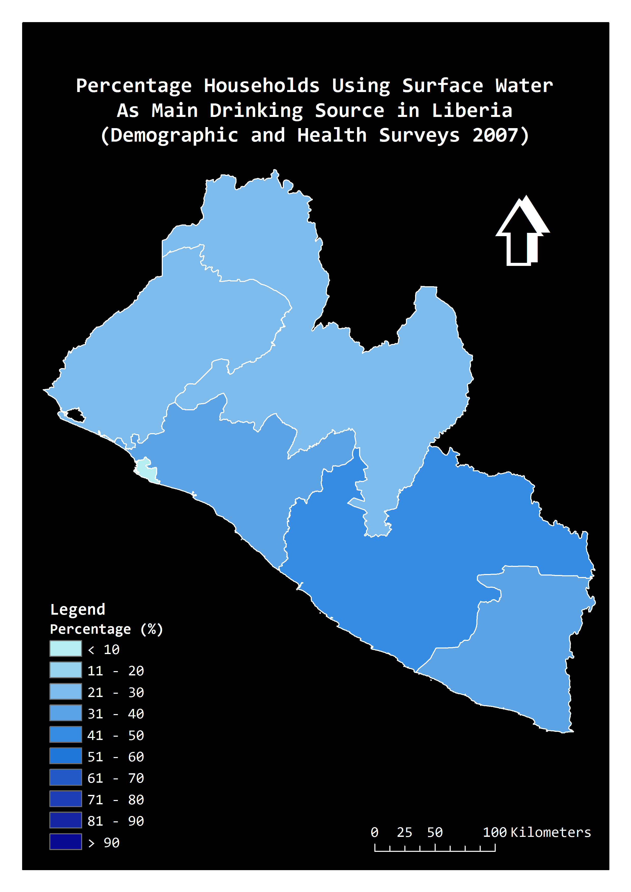 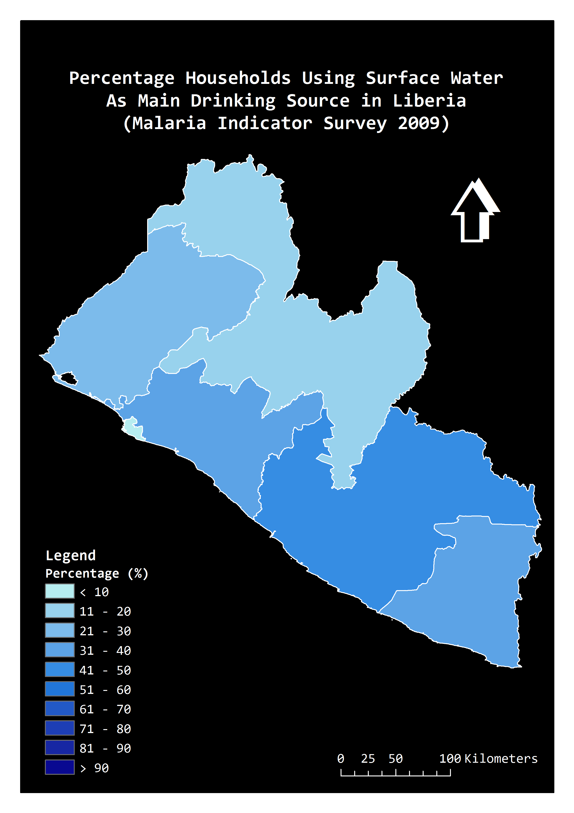 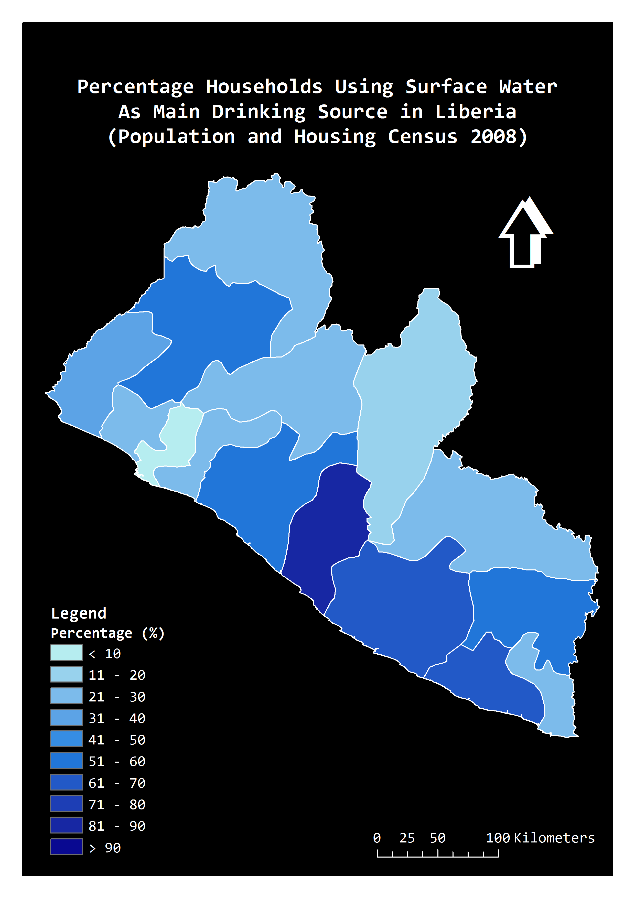 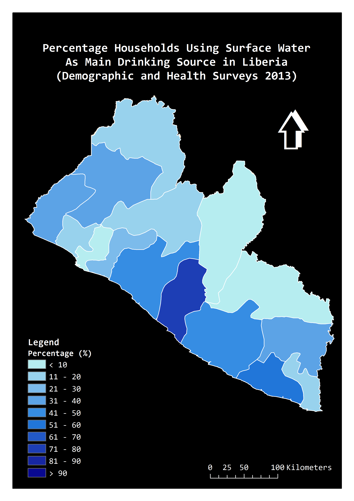 In comparison, predicted MaxEnt surface provides better spatial details that reveals the hidden variations within the areal units. The average AUC value of the 50 replicate runs was 0.759, which suggests reasonable predictive power of the model. However, due to the use of background (pseudo-absence) locations instead of known absences, MaxEnt predicted relative probability rather than the actual occurrence of the surface water drinking sources. It therefore should not replace the water point surveys; nevertheless, they could give a first visual indication of the likely water point locations in areas where water point data is lacking. This is merely a simply model for illustrating the idea. For a more precise prediction, it is necessary to take a systematic framework for the identification of predictive covariates. 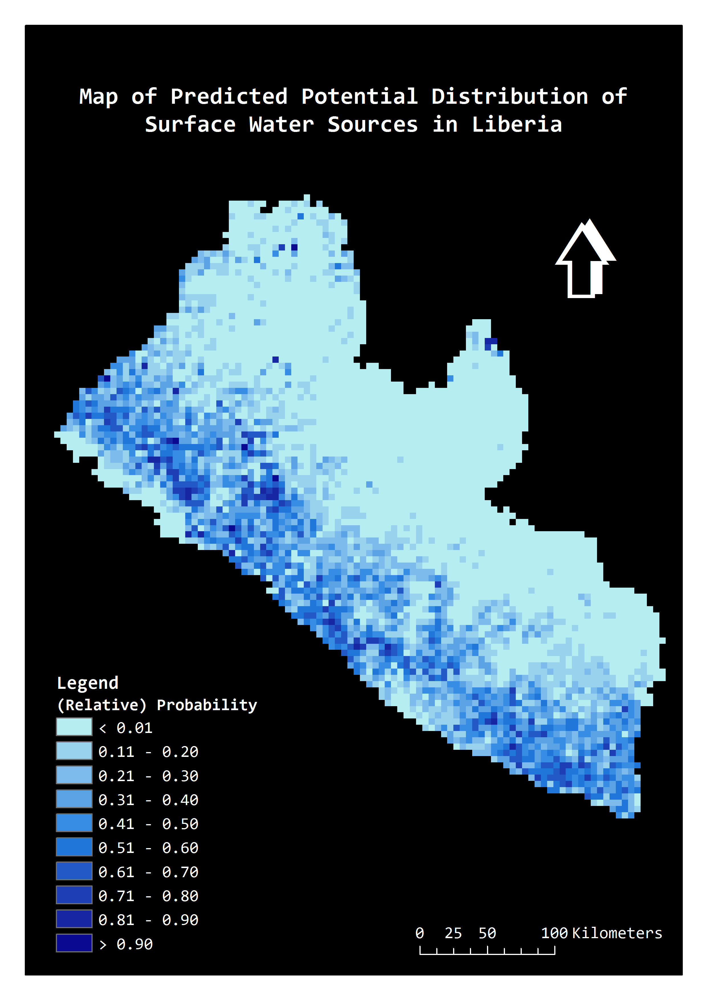 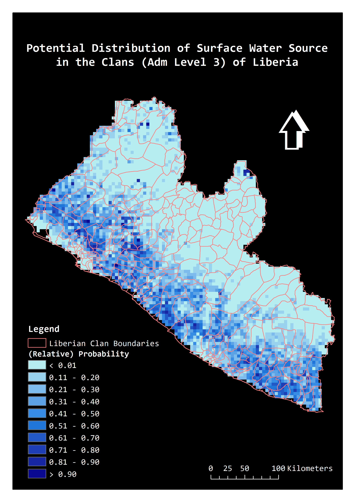 |
CASE STUDY 2: Revealing inequalities in water and sanitation access by wealth in Kenya and TanzaniaOne of the most pronounced inequalities in access to drinking water and sanitation relates to location, typically measured in terms of urban and rural areas. Recent JMP report also highlighted large disparities in WASH services between wealth quintiles and sub-national regions. As more spatially interpolated data concerning wealth and WASH indicators are both becoming available, it provides a new way to reveal the difference in coverage between rich and poor groups by simply matching the geographic locations.In this case study, we derived 1km poverty data from the Worldpop dataset to overlay with the DHS drinking-water and sanitation surfaces; areas where over 50% of residents per grid square living in poverty defined by the Multidimensional Poverty Index (MPI) are considered as 'poor areas', whilst below 50% of residents per grid square living in MPI-defined poverty are considered as 'rich areas'. Results:Kenya:The following maps illustrate the spatial coverages of improved water source (left) and open defecation (right) by wealth in Kenya. Visually, rich areas on the maps show better improved water source coverage and less people without access to toilet in comparison with poor areas. According to zonal statistics (see the table below), the average coverage of improved water source in rich area in Kenya is 67%, whilst in poor area is 39%. In addition, people in rich area mostly (85% averagely) have access to toilet, whilst approximately 71% of people in poor area in average do not have a toilet in their households. 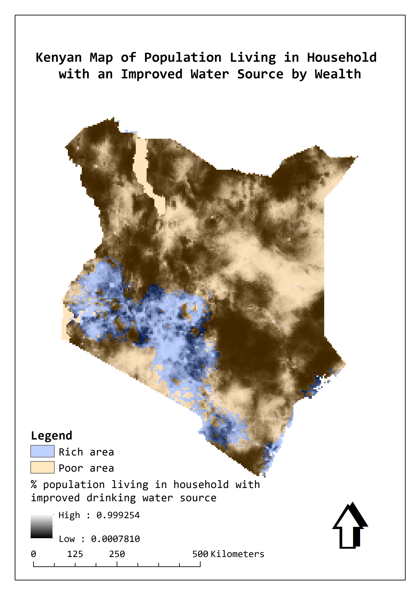 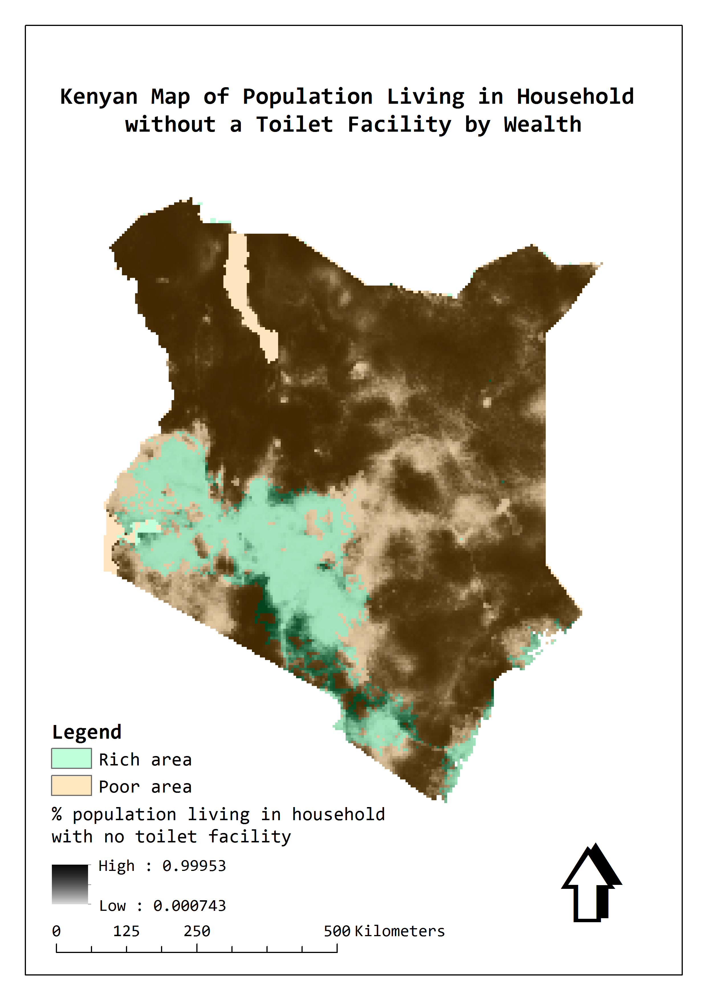 Zonal statistics: 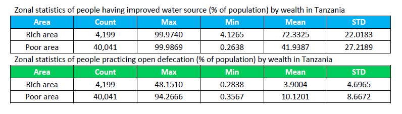 Tanzania: The following maps show the spatial coverages of improved water source (left) and open defecation (right) by wealth in Tanzania. Similarly, rich areas show overall better situations than poor areas on both maps. The numbers in the zonal statistics table needs to be interpreted with caution in terms of national comparison, as in this case we are counting the geographic areas across the countries rather than the actual populated areas. 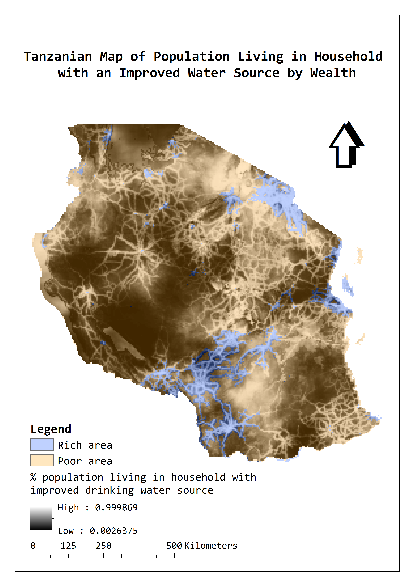 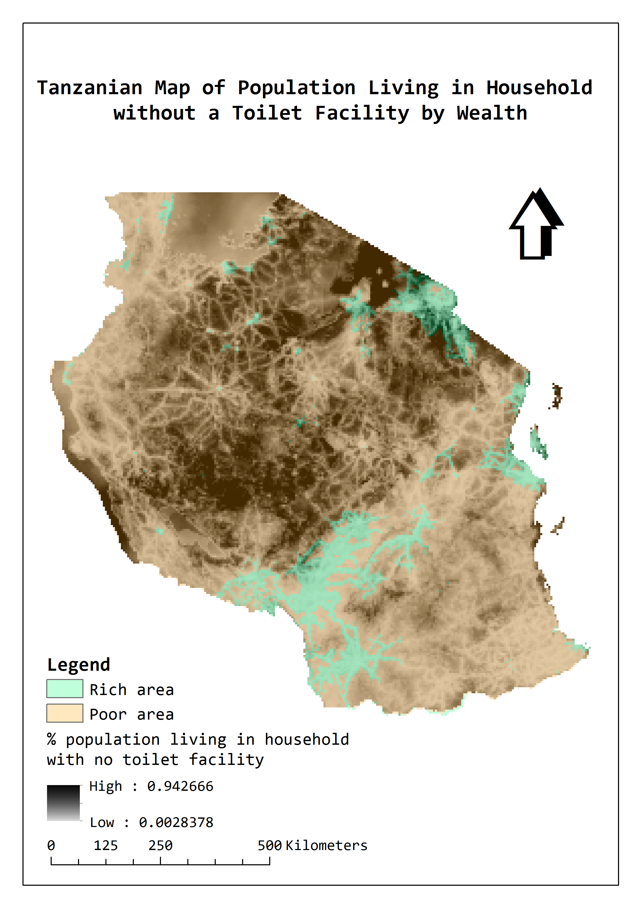 Zonal statistics: |